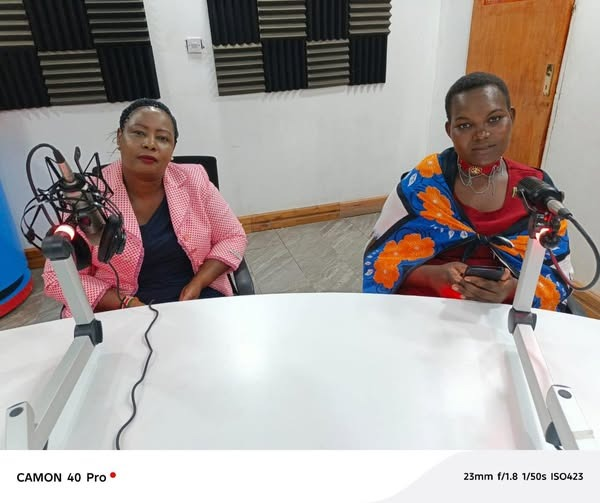
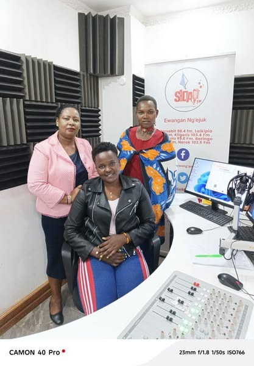

June 2024
MAA Widows and OVC Marks One Year in Office
We were honored to be hosted by Angie Murriet on Sidai FM for a special conversation highlighting the plight and challenges facing widows in the community.
The CEO Nelly Koonyo was joined by Beatrice Yenko, a courageous widow who shared her powerful testimony. After being chased from her land and her home demolished, Beatrice stood firm - and through the support of MAA widows, she successfully reclaimed her land and dignity.
This conversation served as a scorecard for MAA widows showcasing:
- The struggles widows continue to face
- Our ongoing vision to fight disinheritance and protect the rights of widows
We thank Sidai FM and Angie for creating space for this critical dialogue and we recommit ourselves to ensuring no widow is left behind.

